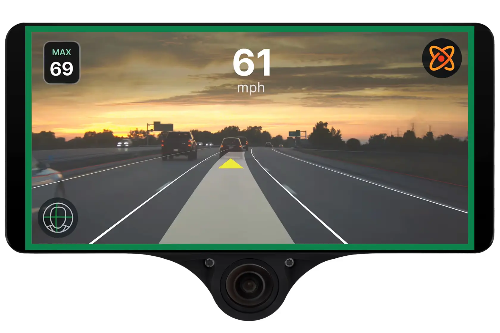
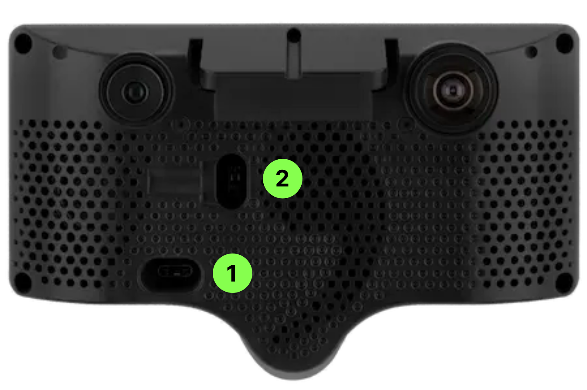
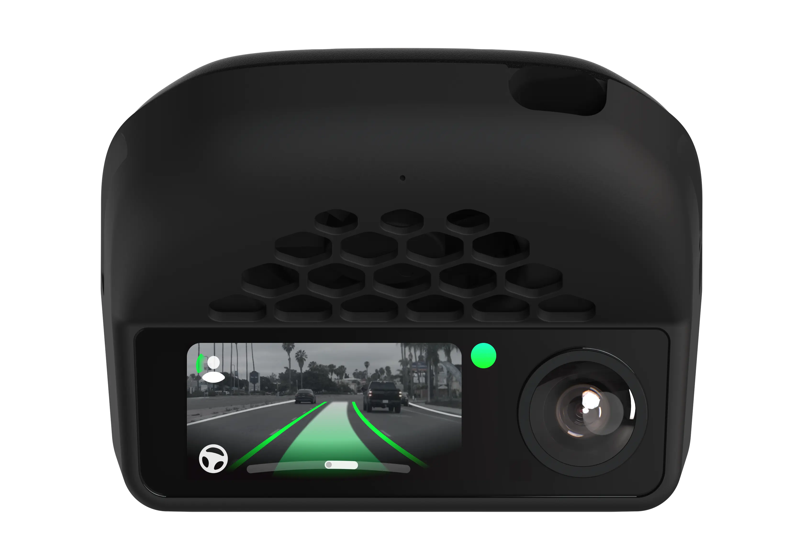
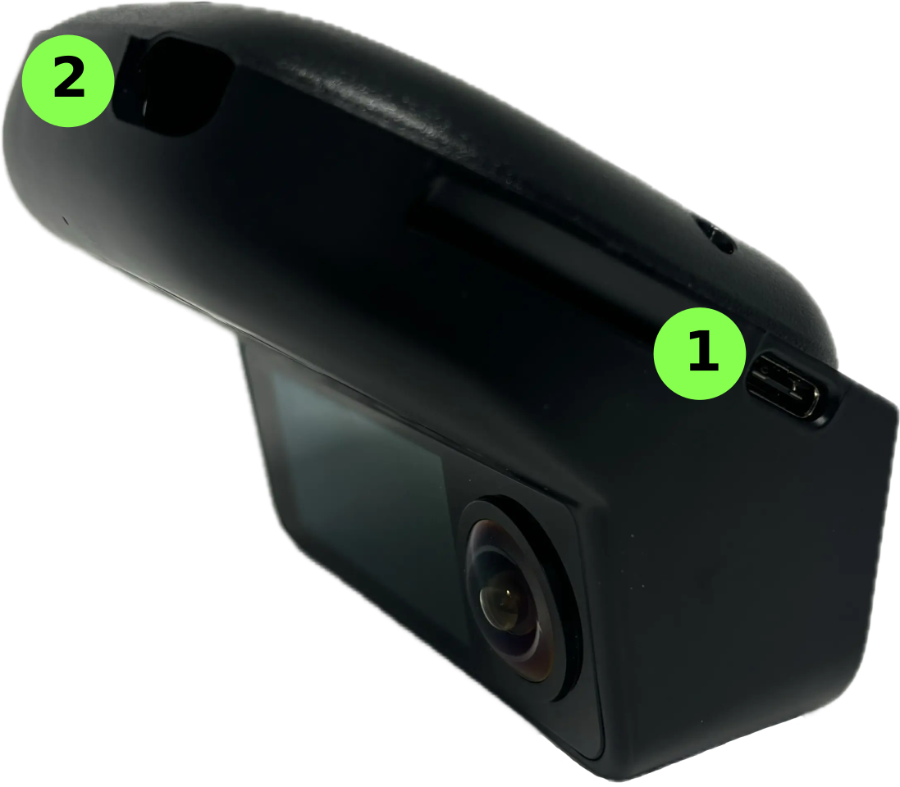
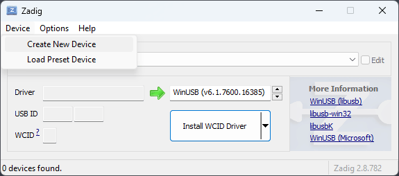
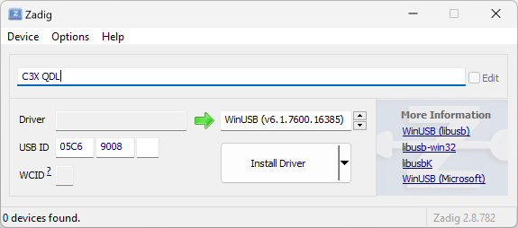

AGNOS …
AGNOS …
USB Recovery
A suite of USB recovery tools for your comma.
Connect your comma
Use desktop Chrome or Edge and a standard USB-C data cable. Leave the car’s harness cable disconnected.
View Instructions
- Power off your comma. Remove both cables. If it has a rear light, wait for the light to go out.
-
Connect the computer first, then power. Match your device to one of the port diagrams. Connect port 1 to your computer with the data cable, then connect port 2 to a wall charger. The screen may stay black in recovery mode.

Rear recovery port

Side recovery port
-
Start recovery on this page. Choose the options you want below, click Start recovery, and select
QUSB_BULKif the browser asks. If macOS prompts first, click Allow.Windows USB driver help
- Open Zadig and choose Device → Create New Device.

- Name it
comma recovery. Enter USB ID05C6:9008for the rear recovery port or3801:9008for the side recovery port. Select WinUSB, click Install Driver, then return here.
- Open Zadig and choose Device → Create New Device.
- Wait for the USB writes to finish. Leave both cables connected while the page is writing. If your comma stays in recovery mode afterward, disconnect both cables and start it on wall power alone.
Recovery options
Recovery status
Waiting for a USB connection.